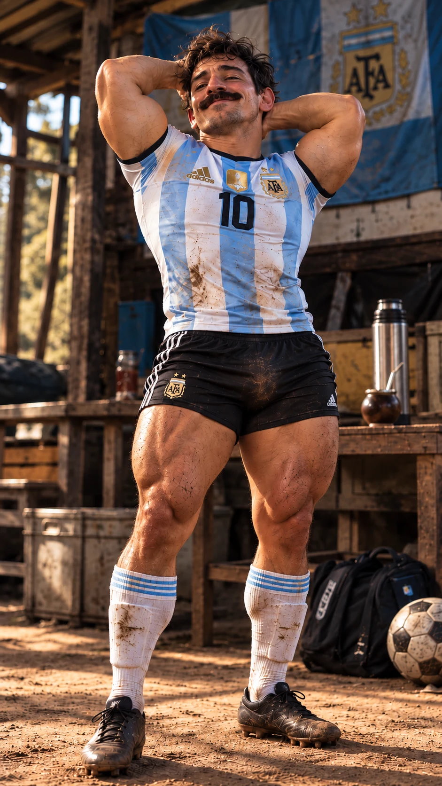
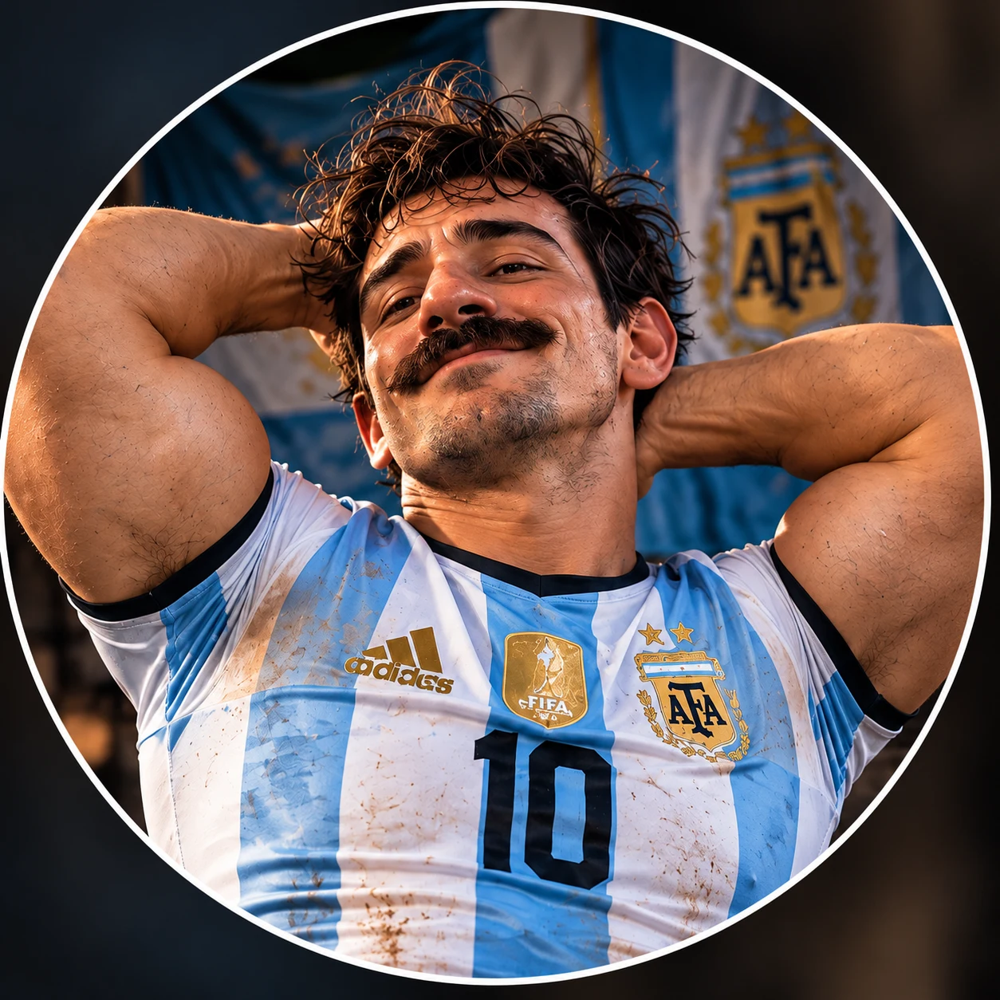
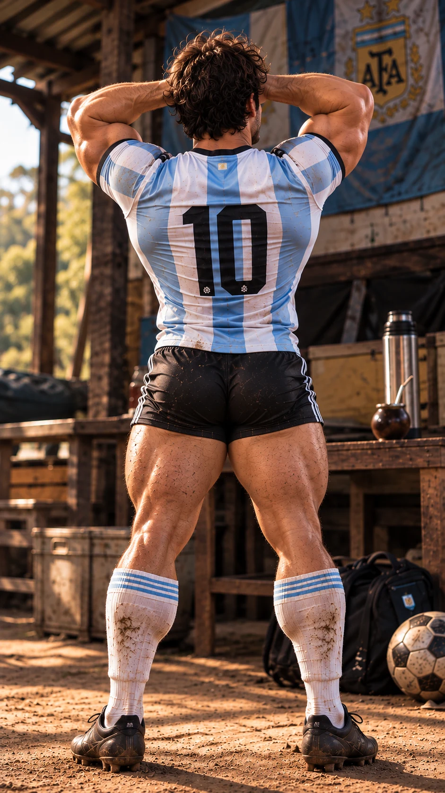

En el ring también me tengo fe
Guantes puestos.
Autoestima intacta.
Me subí al ring. Porque con mirarme al espejo ya no alcanzaba para entrenar los brazos.
Me dicen que tengo demasiado ego.
Yo digo que tengo demasiado músculo.
Soy Messiento Bien. Un tipazo, según yo.

Un poquito de humor, un poquito de gimnasio y una cantidad innecesaria de confianza.

Soy Messiento Bien: bigote con carácter, camiseta ajustada y autoestima que no entra en el vestuario. Me gusta entrenar, hacerme el lindo y sacar una sonrisa.
¿Creído? Un poquito. ¿Piola? Una banda. Acá nos reímos juntos, nos bancamos y aprendemos a querernos sin pedir permiso.
Personaje ficticio creado con inteligencia artificial.
“No estoy agrandado. Estoy en mi talle de autoestima.”
Para levantar el ánimo. Y de paso, el ego.
La camiseta me queda ajustada.
La confianza, enorme.

Me subí al ring. Porque con mirarme al espejo ya no alcanzaba para entrenar los brazos.